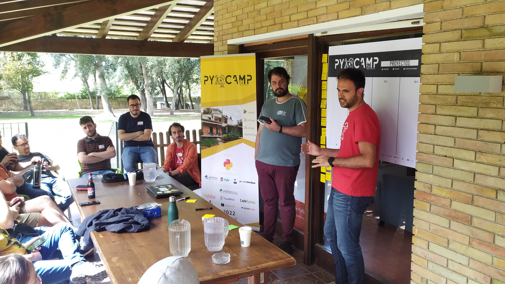
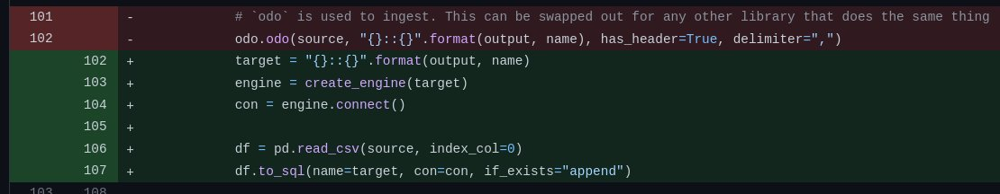
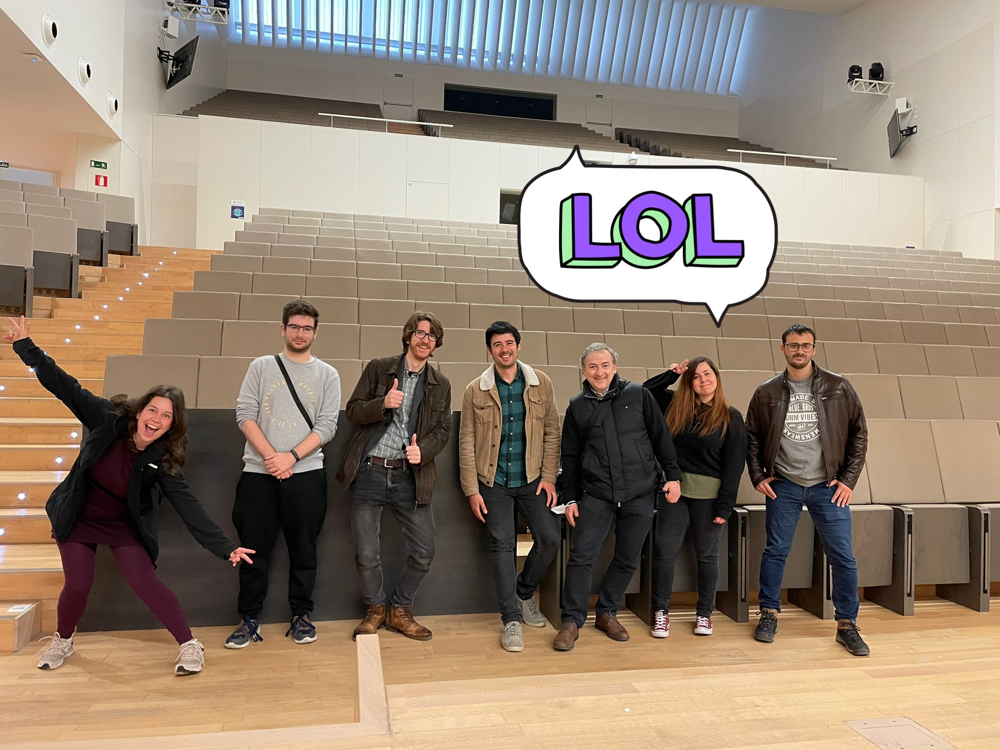
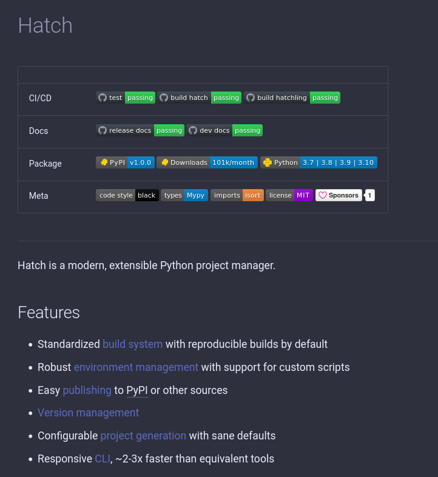
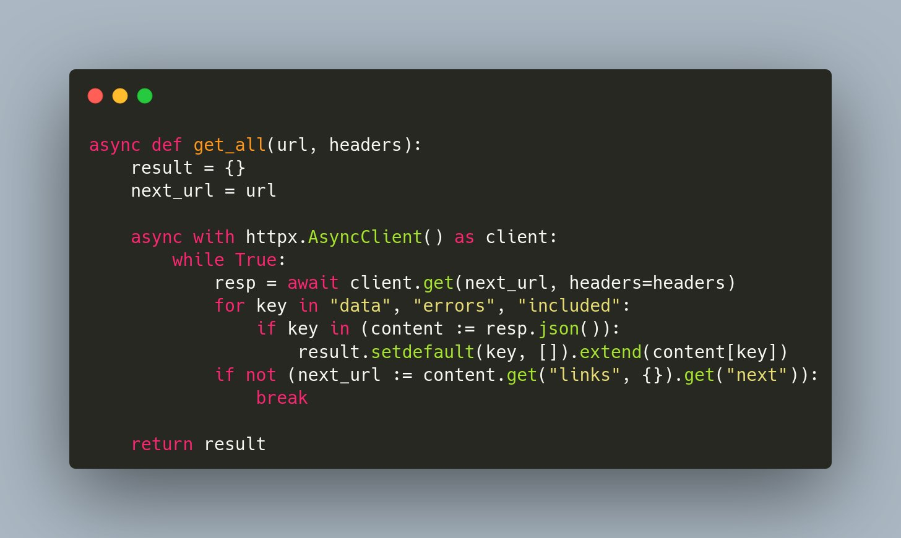
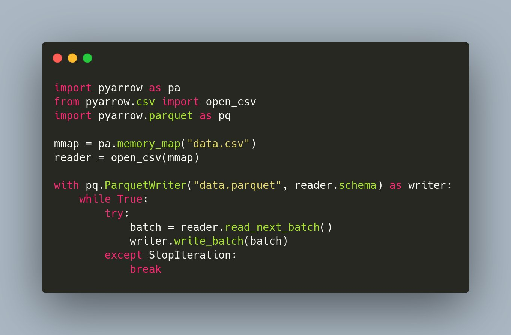

¡Un abrazo Naomi! 🌸
Replying to @__mharrison__ and @numba_jit
is difficult to beat 🙃
RT @PyConES: 📢 ¡Importante!
Como sabemos que muchas y muchos tenéis dudas sobre el nivel de Python que tenéis como para mandar una propues…
😱 Microsoft Excel ships new addon to perform ELT on your favorite data warehouse https://thedoubler.tk/posts/2022/4/1/microsoft-excel-ships-new-addon-to-perform-el-07bf what could go wrong??
Si @Jimena_y_yo es muy crack, pues se dice y ya está 👏 https://twitter.com/Jimena_y_yo/status/1510597466709798912
Replying to @davidgfnet, @BringeroTorero and @JaimeObregon
La mayoría de CSV readers pueden parsear CSVs ambiguos sin problemas, con la ventaja de que un CSV se puede meter directamente en una hoja de cálculo, se puede abrir con un editor de textos, se le puede hacer un `head` o un `grep` desde la línea de comandos...
RT @orchestofficial: Check out Data Overload Vol. 8, the latest edition of our monthly newsletter! ⚡ https://mailchi.mp/caefdd4634fd/orchest-in-2022-data-overload-vol-8
Highlights: 👇
RT @delroth_: At this point I view AGPLv3 as a "source available" license, with implicit understanding that unless you piss the author off…
RT @mari_meir: I work with this minorities in tech-science group and we're looking for speakers for our monthly webinar :)
If you're an und…
Replying to @melissawm
https://blog.readthedocs.com/job-product-developer/ cc @readthedocs !
Juanlu's law: When an organization is big enough, the probability of stupid bugs creeping in approaches 1
Replying to @fisadev and @spolsky
Isn't it ironic? :D
Replying to @McHollander, @axleblazeSA and @jilliancyork
You all seem very smart but perhaps "Americans" should start using continent names correctly at some point, it would save you lots of needless confusion 😉
RT @anacondainc: We are excited to officially announce the hiring of two long-time #Python leaders, Russell Keith-Magee and Antonio Cuni! R…
Replying to @melissawm
My parents were not exposed to social media at all in their youth (only after their 50s) and they also struggle with nuanced arguments, abuse of logical fallacies, etc. I think we are just collectively not used to debating things. If anything, it is now exacerbated...
#14AbrilPorLaRepublica ❤️💛💜
RT @rabernat: Real question: is there *anyone* in academic science / engineering who uses any of the #ModernDataStack SaaS tools? Reply if…
RT @PyCampES: En la lluvia de ideas del proyecto Mapa de Música en #PyCampEs, acabamos de encontrar un excelente título para una canción...…
RT @PyCampES: Seguimos en #PyCampEs con el proyecto componer música con Python usando FoxDot con @juanluisback, @anxodio, @dukebody y @mmm…
Replying to @choldgraf
Come for the computing, stay for the toddlers 😝 Welcome!
Back in town ⚡️ https://youtu.be/uvOuRt_BiRI
Querido diario:
Ayer se acabó el #PyCampES. Me pregunto si la vida volverá a ser como antes. De momento, estoy programando pero ya no oigo la brisa moviendo las hojas de los árboles ni me da el sol matutino en la cara. Mucho que contar, espero hacerlo pronto.
cc @PyCampES

Replying to @ixek and @PyCampES
Tengo una noticia mala y una buena. La mala es que te perdiste un evento muy especial. La buena es que el año que viene hay otro :)
Replying to @willmcgugan
Meet @orchestofficial, a visual pipeline orchestrator for data workflows 😎 https://github.com/orchest/orchest/
Replying to @pakitochus
¡Hace años que funciona perfecto! Al menos en Linux Mint ✨
Replying to @facundobatista
https://twitter.com/travisgerke/status/1515001008493109258 !
Replying to @jaime_rgp and @YouTube
Using https://yewtu.be/ or other Invidious instance 😛
Replying to @juanluisback
https://twitter.com/PyCampES/status/1516384584153411585
RT @laysauchoa: unpopular opinion: we should normalise the use of cosplay in tech conference 👩🎤
#DEVCommunity
Replying to @facundobatista
Meh, too bad :/
RT @orchestofficial: "Overall, we demonstrate that notebooks are characterized by the lower code complexity, however, their code could be p…
Replying to @__mharrison__
The question of measuring Advocacy/DevRel is a tough one, much has been written about it. Just one example: https://www.swyx.io/measuring-devrel
In @orchestofficial case, we have several indirect metrics (weekly/monthly active users, github stars etc) but qualitative/intangible impact is key
Replying to @PyConES
Replying to @david_perell
My eyes rolled so hard I'm watching my own brain right now.
Replying to @juanluisback
More info: https://twitter.com/SymPy/status/1516534649970851841
Replying to @juanluisback
https://twitter.com/melissawm/status/1516611088384675847
Replying to @juanluisback
https://twitter.com/HEPfeickert/status/1516603705449144323
Replying to @juanluisback
https://twitter.com/jorisvdbossche/status/1516666763513057284
Replying to @juanluisback
Did you make it here? Read my hot take:
Silicon Valley's promise of "operating at scale" for efficiency is a lie. When companies operate at scale, shit happens at scale, humans don't count, and basically, we all suffer.
Replying to @juanluisback
https://twitter.com/stefanvdwalt/status/1516560630118944771
Replying to @juanluisback
https://twitter.com/dopplershift/status/1516673199991189505
Replying to @juanluisback
https://twitter.com/luis_in_brief/status/1516581047076491264
Replying to @juanluisback
Oh and forgot the best https://twitter.com/ayhanfuat/status/1516569759101431829
Replying to @TerraMeijar
Tagging @larrygify !
Replying to @yuvipanda
Haha, nope - I blocked them because of this
RT @IIConocimiento: 🚨 ¡No te puedes perder el próximo evento de @PyDataMadrid! Paloma Megías, Data Scientist en el #IIC, hablará de #Machin…
Replying to @maartenbreddels and @bernhardsson
Does Vaex use Arrow in any way for I/O or other stuff? Planning to write a blog post about it very soon
RT @jezdez: 👀 This was not just hackerrank messing up, but @github missing to prevent a fraudulent DMCA notice and by that accepting that a…
RT @emollick: These are all true learning facts (but surprise many instructors)
📝Low-stakes testing is good
📘Rereading is not
📅Spaced out l…
The odo project had a really short timespan (2015-2018) but it was really powerful 😢 What is the modern Python equivalent of
from odo import odo
odo('accounts.csv', 'postgresql://u:p@h/db::accounts')
? I don't think intake can do it https://github.com/blaze/odo/issues/600#issuecomment-423700135
cc @martin_durant_
Replying to @rabernat and @martin_durant_
Indeed. For reference, @martin_durant_ has kindly replied on Matrix that many-to-many write capabilities is out of scope for intake. After some research, I think I'll have to byte the bullet and write some custom SQL with pandas.
Replying to @rabernat and @martin_durant_
Others reached the same conclusion (https://github.com/cytomining/cytominer-database/pull/108/)

Replying to @marco_spinello and @remoquete
Hopefully Python folks will leave reST behind for MyST in my lifetime ;)
Replying to @davidism
> I wonder what the reaction would be
Well, we don't have to wonder: public outcry and entitlement ;) But wouldn't this be a great opportunity for a business model? If you want to use modern Flask on ancient Pythons, you pay, period.
I love the simplicity of pip-tools (declare dependencies in http://requirements.in, run `pip-compile` to freeze requirements.txt, subsequent upgrades must be explicit) but it doesn't seem to work well with conda. What would be the equivalent (or close) for a conda environment?
Replying to @mmngreco
Apparently pip-tools is not properly taking into account packages already installed with conda, and so the resulting requirements.txt has conflicting versions. This is probably out of scope for them though, which is why I haven't opened an issue yet...
RT @marcwouts: I'd love to extend #Jupytext and offer text notebooks with outputs in the percent format. A POC is available at https://t.co…
Replying to @jaime_rgp
I had https://github.com/conda-incubator/conda-lock in my radar but never really used it, will give this a try! Thanks @jaime_rgp🙌
Replying to @__matt_kramer__
Will have a look, thanks a lot for the pointer!
Replying to @ocefpaf and @jaime_rgp
This is great, thanks Filipe!
RT @LauraLacarra: ¡Cartelazo! @quierodata @elisacabana @eunEsPlata @ElenaPandino @martaarcones y Caterina Fuster. Data, IA, devops y blockc…
RT @PyDataMadrid: ¡Aforo completo! 😱 Pero no sufras, ¡apúntate a la lista de espera! Mucha gente cancela a última hora 😉
https://t.co/WRzT…
This is probably the software-related tweet with the highest number of retweets I've ever seen 😳 (also, can't wait to try this out!) https://twitter.com/1st1/status/1516859294896906241
Replying to @glemaitre58
Interesting, I went to block them but I had already done it 🙊 Now I wonder why...!
Replying to @soyparrilla
--verbose
Noticias sobre Python científico de la semana, episodio 30 🐍⚙️🏕️
En resumen: Nueva herramienta revolucionaria para el análisis de memoria en Python, nuevas versiones de pvlib y VisPy, muchas lecturas interesantes, y el mejor evento de Python del mundo https://astrojuanlu.substack.com/p/episodio-30
RT @PyConES: HOY salen a la venta la entradas de la #PyConES22, y solo si hacéis click muy rápido y muy fuerte pillaréis la primera tanda c…
Ya tengo mi entrada para la #PyConES22 😍 ¡nos vemos allí! https://twitter.com/PyConES/status/1517378278633394176
Pro tip: if you want to track Weekly (Monthly, etc) Active Users, *first* define Weekly, Active, and Users:
😱 You will be surprised how difficult this can get
💡 You will discover gaps in your metrics and measurements
🤝 You will align everyone and minimize misunderstandings
Replying to @ixek and @OrbitModel
Indeed! I'm a big fan of @OrbitModel, using it for work + 2 separate projects 🤟
Replying to @ixek and @OrbitModel
Yes! I'm using it for @poliastro_py and for @PyDataMadrid. It has become my favourite CRM now (both because it's the first time I use such a tool, and also because I love the simplicity of the UI and the powerful API and integrations)
Replying to @ixek, @yuvipanda, @OrbitModel, @poliastro_py, @PyDataMadrid and @choldgraf
Gladly! Unsure what's the best way to do this, ping me when you're back and we'll do a quick Doodle/equivalent to find a suitable time :) Maybe I'll record it for posterity
@PyConLT Is info@ the right address? You've got mail :)
Replying to @horacio_ps
Porque en todos los Starbucks de todos los países a los que he ido hay enchufes para poner el portátil
Can I... like... attend *all* #PyData meetups everywhere in the world?
Replying to @noatamir
I raise the bet: can I attend them all *in person*? :D
This week was my first time:
- provisioning resources on AWS
- doing non-trivial PostgreSQL administration
- creating a DIY ETL for real
- installing and using Metabase
- ...and more!
I lost count of how many tabs I opened, how many times I screwed up. Exhausted, but happy ♥️
Replying to @darthbith
And the feeling of "any misstep here can cost us a fortune" is very real 😅 Thanks!
"Call for proposals will close on Monday, April 25th, 2022 (midnight GMT)"
@pydatalondon does that mean 2022-04-25T00:00:00? in other words, is Sunday the last day to send proposals? 🙃
Replying to @Jimena_y_yo
If I'm senior of anything, it's "Senior Web Search & Ctrl+F Practitioner" 😂
Replying to @SylvainCorlay
I'm a big fan of @eu_alternatives :) and have mixed feelings about a number of them. Scalingo PaaS doesn't have a free tier, OVH took days to setup (days!) and I withdrew. Besides, I've had some gripes with Nexcloud calendar as well.
I'll try Scaleway some day, hope they're good
Replying to @choldgraf
I hope this one will stay on for a long time :P But, sound advice! I think AWS business model is basically letting people pay for things they forgot about...
Replying to @_fcpacheco_
Thanks to you! I had forgotten about that, and I'm thrilled to see it has collected a couple of good reviews 😁
Replying to @Jimena_y_yo
RT @PyDataMadrid: ¡Nos vemos este jueves! Ya hay un poco de lista de espera, así que si no puedes asistir por problemas de agenda, no olvid…
Replying to @remoquete
Instant flashback https://youtu.be/zWq65etOM-M
Replying to @remoquete
Replying to @melissawm and @sayabanik
Oh my, I know how this works... Post-acquisition, tens of thousands fly to Mastodon, all public instances collapse because they are all on cheap infra that doesn't stand the load, people bounce here and never try it again, F/OSS "enthusiasts" say they're all brainwashed 😭
Replying to @PyData and @pydatalondon
Thanks! Luckily I already made my submission yesterday 🤟
Replying to @rabernat and @choldgraf
I echo the question - isn't, say, "community-owned" another form of "privately-owned"?
(Genuine question, no trolling)
Replying to @melissawm and @sayabanik
https://twitter.com/andrewgodwin/status/1518612289699594240
Replying to @simonw
I use @feedly, on desktop and mobile
Replying to @jakevdp
Good to see broader recognition of this fact. There's another point though: that gradual typing & MyPy are moving targets, they are evolving too rapidly.
"Python will always be a worse Java", and yet... https://twitter.com/pwang/status/1155616283733442561
Replying to @sethmlarson
I know a few Pythonistas on Fosstodon, although it's not very active yet
Replying to @OSSCapital
I'll believe it when I see it.
You see, in this bubble, we think that the Twitter acquisition means something in the grand scheme of things. But it doesn't! Its new owner will entertain us for a few months with some weird stuff, then he'll forget, and so will we, and then the rest of the world.
Let's move on.
Replying to @juanluisback
I *think* I have found exactly what I was looking for in @singer_io, but the repositories seem largely unmaintained 😢 Probably AGPLv3 was a poor licensing choice for a composable framework, but here we are
Replying to @juanluisback
Other permissively-licensed ETL frameworks like @bonobo_etl, https://github.com/mara/mara-pipelines, and http://pygrametl.org/ are also abandoned unfortunately.
I can safely conclude that "there's not such a thing" being actively used and maintained
Replying to @davidgasquez, @singer_io and @meltanodata
Interesting, thanks for the pointer! I'll subscribe to activity of this repo https://github.com/MeltanoLabs/singer-sqlalchemy 😉
Replying to @davidgasquez, @singer_io and @meltanodata
Ah, found https://hub.meltano.com/taps/postgres on MeltanoHub, which in turn took me to https://github.com/transferwise/pipelinewise 😍
Replying to @juanluisback
Or is there? https://twitter.com/juanluisback/status/1518871839551938560
Replying to @ivybarley and @HiCommunities
Are you here already @JessicaUpani?? 🤟 cc @PyConNA
RT @alexamici: It is my pleasure to announce the first beta release of @bopensolutions flagship Open Source projects: xarray-sentinel and s…
RT @orchestofficial: "By starting with a data catalog you can understand what data is actually of value before migration. If you stand up a…
Replying to @PyCampES and @Jimena_y_yo
Cualquier hilo de @JaimeObregon te dará ideas :D Uno de los últimos https://twitter.com/JaimeObregon/status/1513219259786170372
Must-read 👇 https://twitter.com/EthanZ/status/1518692847452520448
Replying to @sambutlerUS, @EthanZ and @DonGrasberger
Came here to ask the same thing!
RT @PyConES: Acompañadnos en este tour con nuestra avanzadilla molona

Replying to @choldgraf
I think this is what you're looking for https://peps.python.org/pep-0440/#direct-references
e.g.
`pip @ https://github.com/pypa/pip/archive/1.3.1.zip#sha1=da9234ee9982d4bbb3c72346a6de940a148ea686`
Replying to @badboy_
Yep, it happens quite often and it's extremely annoying. I just irrationally accept it but there's a massive margin for improvement in the UX.
Thrilled to see this happening, finally ♥️ https://twitter.com/readthedocs/status/1519363742869295105
RT @scientific_py: Hello World! 😊
Watch our first community onboarding video👀and learn some reasons for contributing to Scientific Python!…
Replying to @TerraMeijar
Contribute to open source 🙌
What are your favorite moderately big, open datasets? I love the NYC Taxi dataset, but I'm looking for alternatives that are:
💡Open
💡Larger-than-RAM, but not too big (around 1-10 GB? for demonstration purposes)
💡Good mix of numerical and categorical features
Suggestions?
Replying to @alexdesiqueira and @VSCodium
Blocked this guy 🚫
Replying to @JulianWasTaken
Thanks, but the http://azuremlsampleexperiments.blob.core.windows.net/criteo/day_XX.gz URLs seem broken :(
Replying to @GallantJonathan
This is a cool URL for JSON datasets, thanks a lot!
Replying to @muheuenga and @TerraMeijar
Good one: teaching others! You'll learn a lot
A new tool for Python packaging has joined the room: Hatch 1.0, by @Ofekmeister
https://ofek.dev/hatch/1.0/
"Hatch complies with modern Python packaging specs [...] So you could use tox as an alternative to Hatch's environment management, or cibuildwheel to distribute packages" ♥️

RT @jezcope: I feel like a lot of people are wanting any alternative to This Place to immediately give them the same network (/reach/clout/…
RT @cahdoria_: Uffffffff, my blood is boiling! Feels like working on ethical Ai/social media is like hitting a wall. Everyday the same dumb…
RT @orchestofficial: Confirmed! Our colleague @juanluisback will deliver a talk "Beyond pandas: The great Python dataframe showdown" at #Py…
TIL: Some JSON APIs are standardized https://jsonapi.org/format/#document-top-level nice!
Replying to @juanluisback
And this is how you read JSONAPI results in #python using #httpx and #asyncio https://gist.github.com/astrojuanlu/c5a416ab2a4abc9ae170b74177cc29d7

Replying to @cgarciae88 and @Ian_Fraser
Well, he certainly can. If he has 44B, he has 1B ;)
Replying to @TerraMeijar
When is #PyConZim 2022? 😃
Replying to @HEPfeickert
Embrace MyST! There's no turning back
Replying to @davidgasquez
Thanks for the pointers David!
RT @davidgasquez: @juanluisback BigQuery has some great medium to large datasets in their public schema (e.g HackerNews, Reddit, Ethereum,…
RT @davidgasquez: @juanluisback Oh! There is also https://en.datamarket.es. They host and maintain some great datasets.
RT @e_mydata: #GiveawayAlert
On the occasion of 2 years of our partnership with Fairphone we are giving away a Murena FP4 with #eOS. To ent…
Replying to @e_mydata and @Fairphone
My next phone will be a #murena #fairphone, that's for sure :)
Replying to @andreazonca, @joinmastodon and @yuvipanda
What are those instances? I'd like to follow some people from them
Replying to @baumannzone
ActionScript3, lo echo un poquito de menos 🥲
RT @draxus: ¿Queréis saber más sobre la @PyConES? En esta entrevista, @Jimena_y_yo (brand new presidenta de @python_es) nos cuenta más deta…
@DotCSV Creo que ayer estábamos ~18 personas de @PyDataMadrid en el mismo bar que tú 😅 no te quería incordiar y no te dije nada pero ¿nos darías una charlita alguna vez? 😁
How to safely convert a large CSV file to Parquet format using #Python and Apache Arrow 🐍🏹

Replying to @melissawm and @writethedocs
I was also on the Sphinx IRC channel as well as the mailing lists, and I'd say the @writethedocs #sphinx channel is by far the most helpful!
Replying to @Patocartelero
https://www.tinuncallevatilde.es/
RT @aherranz: Last day of #30DayChartChallenge and my best graph for this first experience: how are evolving the 10 biggest cities in the w…
Replying to @agustashd
🙌 Nice! Let me know how it goes :)
Lots of interesting ideas here 💡 https://twitter.com/gjbernat/status/1520179922207076353
RT @loooorenanicole: ¿Tiene interés en conectarse con hispanohablantes en la comunidad de #Python? @dennyperez18 y @cmaureir tienen una com…
Replying to @choldgraf
From what I understand from https://twitter.com/sophiamyang/status/1520432921139576835, pyscript uses pyodide, and so does jupyterlite. But I might be wrong here!
Today I'm having "one of those days" and I'm trying out NewPipe (instead of YouTube) and Organic Maps (instead of Google Maps). So far quite happy, let's see how far I go!
RT @pyscript_dev: Good morning #Python #pydata! We hope you are watching @pwang keynote at #PyConUS2022 #PyCon2022 . Welcome PyScript! 🙂
RT @pganssle: Nice. This slide feels like a validation of all the hard work by the many @ThePyPA
members who led and participated in the l…
I don't have FOMO of #PyConUS2022, and at the same time I'm so thrilled to see cool stuff coming out of it - announcements of new projects, joint initiatives, folks meeting IRL after working together for a long time.
Hope you all have a wonderful conference! ♥️
Replying to @DafneCalvo
Enhorabuena Dafne 👏
Replying to @melissawm
Come on, I'm sure you have *magnificent* views of the beach a few minutes away 😊 About the content, we have folks distilling the most salient bits for us on Twitter, and about the people, we'll surely connect with them at some other time ♥️
Replying to @melissawm
(Btw, hope we can ever meet in person, it would be a great honor! Maybe when @ScipyLA goes back to Brazil? 😋)
Replying to @cahdoria_
I'm happy with https://cooperativakinema.es/, but I'm not sure if they speak English 🙈